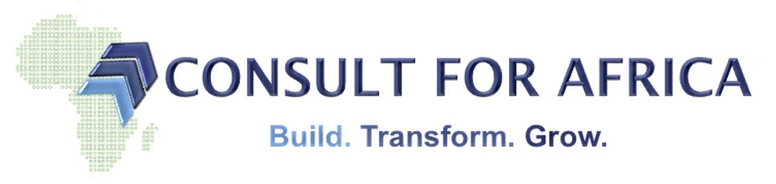

Partnership Proposal — National Pilot
HealthStack Africa and Consult For Africa propose a joint pilot to deploy a national network of EMR and Digitization Advocates across Nigeria. These advocates will provide system-agnostic, on-the-ground support to healthcare facilities navigating the move from paper to digital.
The pilot will field four advocates with national remote coverage, each owning a defined geopolitical zone, supported centrally by C4A operations. The programme is structured to be commercially modest in Phase 1, prove operating mechanics over six months, then scale based on validated unit economics.
N13.32M for the six-month pilot covering four advocates, central coordination, and tooling. Expected output: 60 to 100 facility engagements, validated SOPs, and a scalable playbook for nationwide rollout.
Nigeria's health digitization gap is well documented. Despite Federal mandates, donor-funded EMR deployments, and the proliferation of vendor solutions, adoption remains patchy. The reasons are not technical. They are operational, behavioural, and human.
Most facilities lack:
HealthStack has built one of the more credible digital health platforms in Nigeria. Consult For Africa is the leading healthcare management consulting network on the continent, with a verified pool of clinicians and healthcare operators through CadreHealth and the C4A Agent Channel.
The opportunity: combine HealthStack's product credibility with C4A's distribution and human capital infrastructure to create a category-defining advocacy programme.
An EMR & Digitization Advocate is a healthcare-literate, technology-fluent professional embedded within C4A's operational umbrella, deployed to engage healthcare facilities in their assigned zone. Their role is to:
Critically, advocates are positioned as trusted advisors, not vendor representatives. The system-agnostic stance is the differentiator and must be defended rigorously throughout the programme.
| Element | Detail |
|---|---|
| Duration | 6 months (May 2026 to October 2026) |
| Team size | 4 advocates + 1 programme manager (C4A) |
| Geographic coverage | National, zonal allocation |
| Operating mode | Remote-first with regional travel |
| Target output | 60 to 100 facility engagements |
| Reporting cadence | Weekly to C4A, fortnightly joint review with HealthStack |
Consult For Africa is responsible for:
HealthStack Africa is responsible for:
Healthcare workforce deployment is operationally heavy. Recruiting, contracting, training, performance-managing, and paying field personnel across Nigeria is a discipline in its own right. C4A's CadreHealth platform already handles this for clinical placements. Layering advocacy on top is a natural extension.
It also preserves HealthStack's positioning. The advocacy programme is not a HealthStack sales channel. It is a neutral healthcare advisory function that happens to surface HealthStack as one option among many. That neutrality is strongest when the operating entity is not HealthStack itself.
| Field | Detail |
|---|---|
| Job Title | EMR & Digitization Advocate |
| Reports To | Programme Manager (C4A) |
| Engagement Type | 12-month consulting contract via Consult For Africa |
| Location | Remote, with assigned zone of responsibility |
To preserve neutrality, advocates may not:
This will be enforced through contract clauses, periodic attestations, and random audit.
| Advocate | Zone | States Covered | Est. Facilities |
|---|---|---|---|
| 1 | South West + part South South | Lagos, Ogun, Oyo, Ondo, Osun, Ekiti, Edo, Delta | 280+ |
| 2 | South East + rest South South | Imo, Anambra, Enugu, Abia, Ebonyi, Cross River, Akwa Ibom, Bayelsa, Rivers | 220+ |
| 3 | North Central including FCT | FCT, Plateau, Benue, Kogi, Kwara, Niger, Nasarawa | 180+ |
| 4 | North West + North East | Kano, Kaduna, Katsina, Sokoto, Kebbi, Jigawa, Zamfara, Bauchi, Borno, Adamawa, Gombe, Taraba, Yobe | 240+ |
Default operating mode is remote (phone, video, structured digital assessments). Physical site visits are reserved for:
Each advocate will have a quarterly travel budget to support up to four in-zone trips per month, scaling based on engagement volume.
Trigger: Weekly territory planning session.
Steps:
Output: Ranked list of 8 to 12 facilities for the week's outreach.
Trigger: Facility appears on weekly engagement plan.
Service standards: No more than three follow-up attempts per facility within a four-week window. After that, mark as cold and move on.
Trigger: Discovery call confirmed.
Quality gate: Programme Manager reviews and approves every assessment report before delivery to facility.
Trigger: Assessment complete, facility ready to consider options.
Neutrality safeguard: Quarterly external audit of recommendation patterns. If any single vendor exceeds 50% of recommendations, trigger root-cause review.
Trigger: Facility selects a vendor.
| Cadence | Activity | Owner |
|---|---|---|
| Daily | Activity log in CadreHealth CRM | Advocate |
| Weekly | Pipeline update to Programme Manager | Advocate |
| Weekly | Cohort sync, 45 min, all advocates | Programme Manager |
| Fortnightly | Joint review with HealthStack | PM + HealthStack |
| Monthly | Performance dashboard to all stakeholders | Programme Manager |
| Quarterly | Strategic review and SOP iteration | Joint leadership |
| Issue Type | First Responder | Escalation Path |
|---|---|---|
| Facility complaint | Advocate within 24h | PM within 48h |
| Vendor non-performance | Advocate logs in CRM | PM engages vendor |
| Conflict of interest | Programme Manager | Joint partnership leadership |
| Compliance breach | Programme Manager | C4A Partner + HealthStack Founder |
| Safety or clinical risk | Advocate within 4h | C4A Partner + facility leadership |
C4A will source advocates from three pools:
Target time-to-hire: 4 weeks from programme greenlight.
A 10-day induction programme delivered jointly by C4A and HealthStack:
| Module | Duration | Delivery |
|---|---|---|
| Healthcare digital landscape Nigeria | 1 day | C4A |
| EMR/HIS technology fundamentals | 2 days | HealthStack |
| C4A Digital Readiness Framework | 2 days | C4A |
| Vendor landscape and product comparison | 1 day | HealthStack + C4A |
| Field SOPs and CRM workflows | 1 day | C4A |
| Engagement skills and consultative selling | 1 day | C4A |
| Compliance, ethics, and neutrality | 1 day | C4A |
| Field shadowing and case clinics | 1 day | Joint |
Advocates must pass a certification assessment before being deployed. Recertification every six months.
| Metric | Monthly Target | Notes |
|---|---|---|
| Facilities contacted | 20 to 30 | Quality over quantity |
| Discovery calls completed | 8 to 12 | At least 60-min structured |
| Assessments delivered | 4 to 6 | Quality-gated |
| Implementation engagements active | 2 to 4 | Cumulative |
| 90-day adoption review rate | 80%+ | Of facilities that go live |
| CRM hygiene score | 95%+ | Audited monthly |
Per advocate, monthly:
| Item | Amount (NGN) |
|---|---|
| Base retainer | 250,000 |
| Travel and field allowance | 60,000 |
| Communications and tooling | 20,000 |
| Performance bonus pool (capped) | up to 70,000 |
| Total per advocate / month | up to 400,000 |
Programme-level monthly:
| Item | Amount (NGN) |
|---|---|
| 4 advocates fully loaded | 1,600,000 |
| Programme Manager (C4A, 50% allocation) | 250,000 |
| CRM, training platform, analytics | 80,000 |
| C4A management fee (15%) | 290,000 |
| Total monthly run rate | 2,220,000 |
N13.32M for 6 months, paid in three tranches: 40% upfront, 30% at month 3, 30% at month 6.
The performance bonus pool of up to N70k per advocate per month is unlocked based on:
This creates upside without distorting neutrality.
If the pilot succeeds, Phase 2 can layer in a per-facility-onboarded bonus paid by HealthStack only when a facility chooses HealthStack. To preserve neutrality, this would be paid into a programme bonus pool (split equally among all four advocates regardless of who closed), not directly to the closing advocate.
C4A delivers to HealthStack on the 5th of each month:
| Month | Milestones |
|---|---|
| Month 0 (April) | Sign partnership agreement, kick off recruitment |
| Month 1 (May) | Hire 4 advocates, complete induction, deploy to zones |
| Months 2 to 3 | Pilot phase 1: outreach and assessments |
| Month 3 review | First quarterly review, SOP refinement |
| Months 4 to 5 | Pilot phase 2: implementations and continuity |
| Month 6 (October) | Pilot close-out review, commercial decision on Phase 2 |
| Risk | Likelihood | Impact | Mitigation |
|---|---|---|---|
| Advocates drift toward HealthStack as default recommendation | Medium | High | Quarterly recommendation audit, contract clauses, neutrality KPI |
| Slow facility engagement in target months | Medium | Medium | Conservative KPIs, pivot to government channel if private market resistant |
| Advocate attrition | Medium | Medium | Strong vetting, cohort structure, performance bonus, 12-month commitment |
| Funding interruption | Low | High | Tranched payments, monthly invoicing, 30-day notice clauses |
| Vendor relations strained by neutrality | Low | Medium | Transparent positioning, public framework, vendor briefings |
| Reputational risk to HealthStack from advocate behaviour | Low | High | C4A QA, escalation matrix, contractual indemnities |
This is not a sales programme dressed up as advisory. It is genuinely structured to be neutral, which is precisely what creates the strategic value for HealthStack. Facilities are tired of being sold to. They are starved for trustworthy guidance.
When advocates earn their trust, three things follow:
Six months is enough time to prove this. Four advocates is the minimum viable footprint for national signal. C4A has the people, processes, and platform to make it happen.
If aligned in principle:
We are ready to move. Look forward to your response.
To be developed jointly during induction. Below is a draft of the spirit and key talking points.
"Good afternoon, this is [Name] calling from Consult For Africa. We are running a national programme to support hospitals through the digitization journey, regardless of which system you eventually choose. Most facilities we speak with are weighing options, dealing with vendor pressure, or trying to make sense of where to start. We provide free initial consultations and work as your independent advisor through the process. Would you have 30 minutes next week for a structured conversation about where your facility currently sits on this journey?"
Key principles:
The six assessment dimensions:
Each dimension scores 0 to 10. Composite score determines readiness band: Not Ready, Foundational, Implementation Ready, Optimization, Advanced.